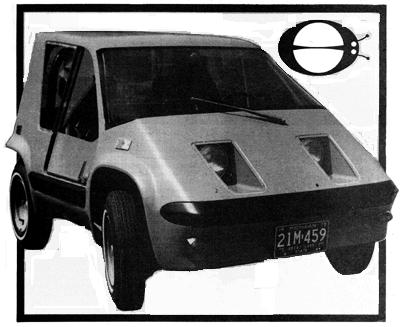

Well, gang as often happens with projects of this nature, we're running a couple of weeks behind schedule with the construction of our first, real, prototype SHUTTLEBUG. By the time you read this, the little two-place, 860-pound, urban vehicle should be on the test track undergoing an exhaustive wringing out.At the time this issue went to press (the last week in May), however, we hadn't yet quite finished assembling the little bugger.
Be that as it may, we did manage to sneak out one photo of the tiny automobile just to whet your appetite for the real photo and text coverage of the vehicle that we've got coming.
Actually, this picture doesn't do the BUG justice (as they always say) but you'll just have to wait until next time so you can prove that statement to yourself.
In the meantime, yes, that is a Michigan license plate you see on the prototype. Although the big automobile companies in this country still choose to ignore the developing market, for ultra mini vehicles, a growing number of talented engineers, designers, and technicians who work for those companies are not so blind. We won't name any names but we will say that a few GM and For, people moonlighted on our project for us, and that's about as First Class you can go here in the U.S. of A.
At this point (and, remember, the car hasn't even been fired up yet), computer analysis tells us that the SHUTTLEBUG should deliver some where around 54 miles per gallon (regular gasoline at a steady 55 mile per hour out on the highway. To, speed will range up around 62 miles per hour and the machine should cove 300 miles or better on a tank of gas.
Now all we have to those figures in real life.
|
 |
|
|